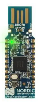
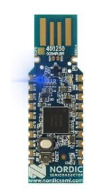
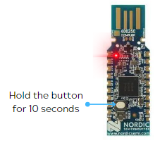

Setting Up Your SuperSplay Glove Hardware
USB Bluetooth Dongle (standard connection option)
Each SuperSplay glove uses one USB Bluetooth dongle. Out of the box, these are already paired to each glove.
- Please connect each USB Bluetooth Dongle to any USB 3.0 port on your PC (please see Tips below for more information)
- The USB Bluetooth dongle will have a solid green LED showing. This means that it is waiting for a connection to its paired SuperSplay glove.

- Power on your SuperSplay glove by pressing the power button on top of the glove once.
- A slow flashing blue LED on the glove means that it is not currently connected to a USB Bluetooth dongle (one second on, one second off)
- The glove will automatically connect to its paired dongle. Once connected, the glove LED will change to a flashing blue LED (one quick flash every second) and the USB Bluetooth Dongle will have a solid blue LED.

- Windows will detect the USB Bluetooth dongle and automatically apply a COM port number to that dongle. (You may check these in the Windows Device Manager)
- You are now ready to create and stage a performer and connect to Hand Engine.
Tip: Using a USB Hub
You may use a USB Hub to connect your USB Bluetooth Dongle.
Please make sure that the USB Hub you are using has its own independent power supply. This is very important if the hub is located at the end of a USB extension cable.
Tip: For the best Bluetooth signal
The antenna on the USB dongle is designed to radiate perpendicular to the dongle.
To ensure the best signal performance:
- Position the dongle off the floor. Placing the dongle near the floor degrades the signal quality.
- Position the dongle vertically. This ensures the antenna is in the correct orientation for best performance.
- Use a powered USB hub if required.
- Avoid plugging dongles in behind a desktop PC. The proximity to other electronics, power cables, and metal objects will degrade the signal.
Pairing USB Bluetooth Dongle
Out of the box, your glove should already be paired to its associated USB Bluetooth dongle.
If your glove is no longer paired to the USB Bluetooth Dongle, or you have received a replacement dongle, please follow these instructions to re-pair.
- Please turn all gloves off in the vicinity.
- Make sure the USB Bluetooth Dongle is connected and is showing a solid green LED.
- Press and hold the button on the top for approximately 10 seconds while the dongle is plugged in.

- The LED on the USB Bluetooth dongle will turn solid red.
- Power on the glove and place it within 10cm of the USB Bluetooth Dongle.
- The dongle LED will change to solid green, and then to solid blue once the glove has connected.
Wired USB Connection (alternative connection option)
You may connect your SuperSplay pro gloves to your PC using a Micro USB cable in a wired configuration. This may be helpful when doing desktop capture sessions and a wireless connection is not required.
- Please connect your glove to your PC using the Micro USB port from the glove.
- On the side of the SuperSplay glove electronics module, please change the switch from C (Charge) to D (Data).
- Power on the glove by pressing the power button once
- Once powered on, please press the power button on the glove twice (quickly)
- The LED on the glove will change from blue to a quick flashing green color (one flash every second)
- You are now ready to connect to Hand Engine.